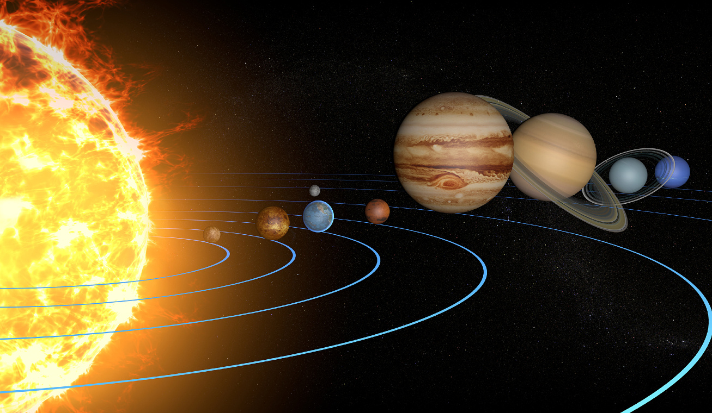

A Naprendszer
A Naprendszer a Nap gravitációja által egyben tartott bolygórendszer, része a Tejútrendszer milliárd csillagrendszerének, amely galaxisunk Orion spirálkarjának nagyjából a felénél, a galaxis közepe és pereme között is hozzávetőleg félúton helyezkedik el. A Naprendszer határa a Naptól számított 8-10 billió km (kb. 1 fényév). A tudósok csak a 20. században jöttek rá, hogy a Naprendszernek nem a Kuiper-övnél van vége, hanem az Oort-felhőnél. A csillagászatban csillagrendszer alatt olyan rendszert értünk, amelyben sok csillag található, amik egymással gravitációs kölcsönhatásban vannak. Bolygónknak, a Földnek otthont adó Naprendszerünk középpontjában a Nap található. Csillagunk gravitációs térrészén belüli objektumok és kölcsönhatások összessége jelenti a Naprendszert. Központi csillagunk hozzávetőleg 4,6 milliárd évvel ezelőtt alakult ki egy hatalmas gázfelhő gravitációs összehúzódása nyomán. Nem sokkal később, már 4,567 milliárd évvel ezelőtt a csillagkeletkezésnél visszamaradt, a Nap egyenlítői síkjában lapos korongba rendeződött anyagból, a protoplanetáris korongból kialakultak az első kisbolygók, majd bolygók. A belső Naprendszerben négy kőzetbolygó (a Merkúr, a Vénusz, a Föld és a Mars), a külső Naprendszerben négy óriásbolygó (a Jupiter, a Szaturnusz, az Uránusz és a Neptunusz) és az öt törpebolygó (Ceres, Pluto, Haumea, Makemake, Eris) alakult ki. A kőzetbolygók kérge szilikátos, a gázbolygók viszonylag kis szilárd magját hatalmas hidrogén–hélium légkör veszi körül, a törpebolygók összetétele jeges kőzet. A Naprendszerben a bolygókon kívül számos kisebb égitest is található. A legnagyobb számú égitest-populáció a két különálló övezetbe rendeződött aszteroidák családja. A belső aszteroidaöv a Mars és a Jupiter között, a külső, ún. Kuiper-öv pedig a Neptunusz pályáján túl helyezkedik el ellipszis alakban keringve a Nap mint gyújtópont körül. Ezekben az övekben található öt olyan objektum, amelyek egy 2006-ban bevezetett égitesttípus ma ismert első tagjai, a törpebolygók. Hat bolygónak és három törpebolygónak természetes kísérői is vannak, ezeket holdaknak nevezzük. A holdakon kívül az óriásbolygók körül gyűrűk, gyűrűrendszerek keringenek. A rendszerben vannak szabadon keringő testek is, ezek az üstökösök, a kentaurok és a mindenütt jelenlévő bolygóközi por. Ezek zömének keringése merőben eltér a többi testétől: vagy elnyújtott ellipszispályákon, vagy az ekliptikáétól eltérő síkban mozognak. A Naprendszert teljesen betölti a napszél, a csillagunkból kiinduló folyamatos részecskeáramlás, amely kölcsönhatásba lép az égitestekkel, létrehozva az űridőjárást. A napszél egyben ki is jelöli a Naprendszer határait: hatása a heliopauzáig tart, ahol más csillagok szeleinek sugárnyomása kiegyenlíti a napszél sugárnyomását. Ezt a határt tekintjük a Naprendszer határának, bár a rendszer gravitációs határa messzebbre tehető, hisz még a hozzávetőleg egy fényév távolságig terjedő Oort-felhő is ezen a határon belül van.
A nap

A Nap keletkezése, fejlődése. Keletkező naprendszerek az Orion-ködben. A mi Napunk is így született A Nap 4,6 milliárd évvel ezelőtt (az Univerzum ma ismert korának kétharmadánál) született, harmadik generációs csillag. Sajnos megfigyeléseken alapuló, kísérletileg bizonyított keletkezési modellel még nem rendelkezik a csillagászat – bár a Barnard 335 csillag megfigyelésével a bizonyíték megszerzésének küszöbére érkezett[5]–, így csak elméletek állnak rendelkezésre. A ma legelfogadottabbnak tekintett keletkezési modell szerint Napunk születési helye egy molekulafelhő volt, egy gázzal és kozmikus porral teli, instabil térség, amelyben valamilyen okból – a legvalószínűbb forgatókönyv szerint egy közeli szupernóva robbanásának hatására – felborult az egyensúly,[5] és egy Naprendszer méretű anyagcsomó a saját tömegétől összeomlott; az anyag elkezdett összehúzódni egész addig, míg létre nem jött belőle a proto-Nap. A csillagkezdemény anyaga még tovább sűrűsödött, majd néhány millió év alatt beindult a belsejében a magfúzió és megszületett a Nap. A beinduló magfúzió hatására a napszél is elkezdte áramlását és kifújta a maradék gázt a Nap környezetéből. Egy planetáris köd, egy Naphoz hasonló csillag életének végstádiuma. Napunk 5 milliárd évvel későbbi állapota Kezdetben csillagunk gyorsan forgott a saját tengelye körül, mivel a molekulafelhő teljes perdülete benne maradt fenn, később azonban lassult a forgás, nagyobbrészt a kialakuló bolygórendszernek átadott impulzusmomentum, kisebb részt a napszél folyamatos, szintén „impulzusmomentum-elszívó” hatása miatt. A Nap sugárzása is fejlődést mutat, születésekor a mainak mintegy 70%-a volt a kibocsátott sugárzás mértéke, amely milliárd éves időskálán folyamatosan növekszik, amíg csillagunk ún. fősorozati csillag marad. A Nap az életpályája során a legtöbb időt a fősorozatban tölti el, ez csillagunk életpályájának aktív részét jelenti, amíg a hidrogénkészletét a magfúziós folyamatok héliummá alakítják, modellszámítások szerint ennek a szakasznak a felénél tartunk napjainkban. Az elkövetkező 1 milliárd évben a Nap fényessége és külső hőmérséklete tovább növekszik. A Nap nagyjából 10 milliárd éves koráig marad a fősorozatban, ekkor kifogy a hidrogénkészlete és átmegy a vörös óriás fázisba. Ebben a fázisban beindul a héliumfúzió – a hélium szénné alakulása –, ami megtízszerezi a mag hőmérsékletét, ezzel a sugárnyomást is, így a gravitáció és a belső nyomás egyensúlya felborul az utóbbi javára, ez felfújja a csillagot (modellszámítások szerint a Föld mai pályáján, 1 csillagászati egységen túlra), miközben a felszíni hőmérséklete lecsökken. A felfúvódás során tömegének egy jelentős részét – számítások szerint 30%-át – is elveszti. A héliumégető fázis az egész élettartam ezredrészét teheti ki, néhány tízmillió évig tart. Mikor a héliumkészlet szénné (és oxigénné) alakul, a Nap ledobja külső héját, amely egy tág burkot alkot majd a megmaradt mag körül – egy távoli megfigyelő számára planetáris ködöt alkotva. A visszamaradt mag fehér törpeként él tovább. Fehér törpe állapotban a Nap rendkívül kicsivé fog összehúzódni (nagyjából Föld méretűvé) és fényessé válik, belső energiatermelő folyamat azonban nem zajlik benne majd tovább. Csillagunk a benne akkumulálódott hőt fogja kisugározni és nagyon lassan kihűl. A Nap életpályájának a fősorozatban töltött idejéhez mérhetően hosszú, de jelenlegi ismereteink szerint még nehezen meghatározható fázisába lép ekkor, a csillag lehűlése egészen a fekete törpe állapotig tart majd. Ez a folyamat hosszabb lehet a világegyetem eddig eltelt életkoránál (a legidősebb fehér törpék még mindig a hűlési fázisnál tartanak, a fekete törpe állapot ma még csak elméleti modellekben létezik, megfigyelni még nem sikerült, így összességében a Nap életpályája a fekete törpévé válásig, csillagunk „haláláig” elérheti a 25–30 milliárd évet.